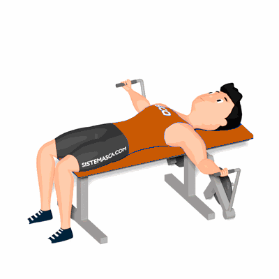

Crucifixo Articulado Reto

Exercício que tem como objetivo o fortalecimento e hipertrofia dos músculos do peitoral e deltoides.
Ficha Técnica
Tipo: Musculação
Grupo Muscular: Peito
Aparelho: Nenhum
Músculos: Nenhum
Como realizar
- Deite sobre o banco do aparelho com as costas e os glúteos estabilizados no banco;
- Segure com pegada neutra os pegadores do aparelho;
- Com os cotovelos ligeiramente flexionados, eleve os pegadores até ficarem acima do peito com as palmas das mãos voltadas uma para a outra;
- Agora inverta o movimento e retorne à posição inicial;
- Repita os movimentos, conforme o número de repetições orientado pelo professor.
 RC STORE
RC STORE